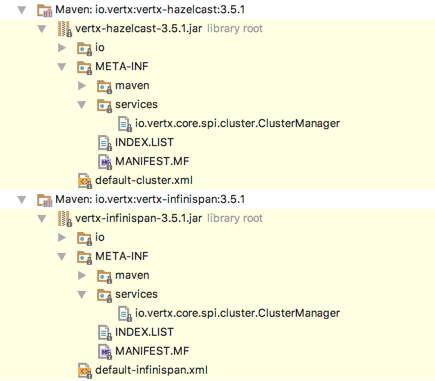

Vert.x中的集群管理器
重写该章节是因为在写本书时，发现了一些问题，好吧，分享一下这部分支线剧情，作为正篇的补充。最初我以为Vert.x中的集群管理器默认使用了Hazelcast集群管理器，即使我引入了新的集群管理器依赖，它还是会采用Hazelcast的集群管理器功能，结果却事与愿违。
1. 初章
最初在Maven项目的依赖项（pom.xml文件）中引入了下边代码：
<dependency>
<groupId>io.vertx</groupId>
<artifactId>vertx-hazelcast</artifactId>
<version>3.5.3</version>
</dependency>使用集群模式启动时，可以看到：
Mar 21, 2018 5:26:07 PM com.hazelcast.instance.DefaultAddressPicker
INFO: [LOCAL] [dev] [3.8.2] Prefer IPv4 stack is true.
Mar 21, 2018 5:26:07 PM com.hazelcast.instance.DefaultAddressPicker
INFO: [LOCAL] [dev] [3.8.2] Picked [192.168.30.41]:5701, using socket ServerSocket[addr=/0:0:0:0:0:0:0:0,localport=5701], bind any local is true
Mar 21, 2018 5:26:07 PM com.hazelcast.system
INFO: [192.168.30.41]:5701 [dev] [3.8.2] Hazelcast 3.8.2 (20170518 - a60f944) starting at [192.168.30.41]:5701
Mar 21, 2018 5:26:07 PM com.hazelcast.system
INFO: [192.168.30.41]:5701 [dev] [3.8.2] Copyright (c) 2008-2016, Hazelcast, Inc. All Rights Reserved.
Mar 21, 2018 5:26:07 PM com.hazelcast.system
INFO: [192.168.30.41]:5701 [dev] [3.8.2] Configured Hazelcast Serialization version : 1
Mar 21, 2018 5:26:07 PM com.hazelcast.spi.impl.operationservice.impl.BackpressureRegulator
INFO: [192.168.30.41]:5701 [dev] [3.8.2] Backpressure is disabled
Mar 21, 2018 5:26:08 PM com.hazelcast.instance.Node
INFO: [192.168.30.41]:5701 [dev] [3.8.2] Creating MulticastJoiner
Mar 21, 2018 5:26:08 PM com.hazelcast.spi.impl.operationexecutor.impl.OperationExecutorImpl
INFO: [192.168.30.41]:5701 [dev] [3.8.2] Starting 8 partition threads
Mar 21, 2018 5:26:08 PM com.hazelcast.spi.impl.operationexecutor.impl.OperationExecutorImpl
INFO: [192.168.30.41]:5701 [dev] [3.8.2] Starting 5 generic threads (1 dedicated for priority tasks)
Mar 21, 2018 5:26:08 PM com.hazelcast.core.LifecycleService
INFO: [192.168.30.41]:5701 [dev] [3.8.2] [192.168.30.41]:5701 is STARTING
Mar 21, 2018 5:26:10 PM com.hazelcast.system
INFO: [192.168.30.41]:5701 [dev] [3.8.2] Cluster version set to 3.8
Mar 21, 2018 5:26:10 PM com.hazelcast.internal.cluster.impl.MulticastJoiner
INFO: [192.168.30.41]:5701 [dev] [3.8.2]
Members [1] {
Member [192.168.30.41]:5701 - ac0c86e8-310e-4ce0-9be4-0946a055aaf4 this
}
Mar 21, 2018 5:26:10 PM com.hazelcast.core.LifecycleService
INFO: [192.168.30.41]:5701 [dev] [3.8.2] [192.168.30.41]:5701 is STARTED
Mar 21, 2018 5:26:10 PM com.hazelcast.internal.partition.impl.PartitionStateManager
INFO: [192.168.30.41]:5701 [dev] [3.8.2] Initializing cluster partition table arrangement...2. 转折
如果在Maven项目中添加一段：
<dependency>
<groupId>io.vertx</groupId>
<artifactId>vertx-hazelcast</artifactId>
<version>3.5.3</version>
</dependency>
<dependency>
<groupId>io.vertx</groupId>
<artifactId>vertx-infinispan</artifactId>
<version>3.5.3</version>
</dependency>这是让我产生错觉的根源，因为这里使用的这种依赖方式，所以启动日志没发生变化——所以当时我傻傻地以为Vert.x使用了默认的Hazelcast的ClusterManager，而且也不想进入内部去看相关源代码，所以当时没有留意。一次偶然的情况，我把Maven项目中的依赖项的顺序改了：
<dependency>
<groupId>io.vertx</groupId>
<artifactId>vertx-infinispan</artifactId>
<version>3.5.3</version>
</dependency>
<dependency>
<groupId>io.vertx</groupId>
<artifactId>vertx-hazelcast</artifactId>
<version>3.5.3</version>
</dependency>结果启动日志变了，而且集群管理器从Hazelcast自动切换到了Infinispan上：
Mar 21, 2018 5:37:12 PM io.vertx.ext.cluster.infinispan.InfinispanClusterManager
WARNING: Cannot find Infinispan config 'infinispan.xml', using default
Mar 21, 2018 5:37:13 PM org.infinispan.remoting.transport.jgroups.JGroupsTransport start
INFO: ISPN000078: Starting JGroups channel ISPN
Mar 21, 2018 5:37:18 PM org.infinispan.remoting.transport.jgroups.JGroupsTransport receiveClusterView
INFO: ISPN000094: Received new cluster view for channel ISPN: [LangdeMacBook-Pro-32296|0] (1) [LangdeMacBook-Pro-32296]
Mar 21, 2018 5:37:18 PM org.infinispan.remoting.transport.jgroups.JGroupsTransport startJGroupsChannelIfNeeded
INFO: ISPN000079: Channel ISPN local address is LangdeMacBook-Pro-32296, physical addresses are [127.0.0.1:7800]
Mar 21, 2018 5:37:18 PM org.infinispan.factories.GlobalComponentRegistry start
INFO: ISPN000128: Infinispan version: Infinispan 'Bastille' 9.1.3.Final
Mar 21, 2018 5:37:18 PM org.infinispan.expiration.impl.ExpirationManagerImpl start
INFO: ISPN000025: wakeUpInterval is <= 0, not starting expired purge thread
Mar 21, 2018 5:37:18 PM org.infinispan.expiration.impl.ExpirationManagerImpl start
INFO: ISPN000025: wakeUpInterval is <= 0, not starting expired purge thread3. 本质
走到这一步，不得不去查看它的源代码了，这种选择办法似乎有一种队列的消费机制，类加载器先找到哪个就使用哪个，除非您使用了VertxOptions去指定了集群管理器，否则应该是这样的。带着这种猜想，进入源代码。
3.1. VertxImpl
实际上ClusterManager的设置在io.vertx.core.impl.VertxImpl实现中：
if (options.isClustered()) {
this.clusterManager = getClusterManager(options);
this.clusterManager.setVertx(this);
this.clusterManager.join(ar -> {
if (ar.failed()) {
log.error("Failed to join cluster", ar.cause());
resultHandler.handle(Future.failedFuture(ar.cause()));
} else {
// Provide a memory barrier as we are setting from a different thread
synchronized (VertxImpl.this) {
haManager = new HAManager(this, deploymentManager, clusterManager, options.getQuorumSize(),
options.getHAGroup(), haEnabled);
createAndStartEventBus(options, resultHandler);
}
}
});
} else {
this.clusterManager = null;
createAndStartEventBus(options, resultHandler);
}在VertxOptions中启用了集群时，下边这行代码会获取ClusterManager的实现：
this.clusterManager = getClusterManager(options);该私有方法的完整代码如下：
private ClusterManager getClusterManager(VertxOptions options) {
if (options.isClustered()) {
if (options.getClusterManager() != null) {
return options.getClusterManager();
} else {
ClusterManager mgr;
String clusterManagerClassName = System.getProperty("vertx.cluster.managerClass");
if (clusterManagerClassName != null) {
// We allow specify a sys prop for the cluster manager factory which overrides ServiceLoader
try {
Class<?> clazz = Class.forName(clusterManagerClassName);
mgr = (ClusterManager) clazz.newInstance();
} catch (Exception e) {
throw new IllegalStateException("Failed to instantiate " + clusterManagerClassName, e);
}
} else {
mgr = ServiceHelper.loadFactoryOrNull(ClusterManager.class);
if (mgr == null) {
throw new IllegalStateException("No ClusterManagerFactory instances found on classpath");
}
}
return mgr;
}
} else {
return null;
}
}3.2. Maven相关？
如果Debug上边的代码，最终产生影响的是下边这行：
mgr = ServiceHelper.loadFactoryOrNull(ClusterManager.class);这里的mgr引用会得到不同的实现类，该实现类位于依赖包的文件中：

本书不讲Maven的具体细节，单单从现象上可以知道，Maven的dependency是有顺序可言的，而且一般采用的是依赖原则，而这里的两个插件包相互独立，所以就出现了先找到为主，所以可以了解的是Maven在搜索依赖库时会根据依赖库的信息逐层往下查找。
- 间接依赖路径最短优先：比如一个项目test依赖了a.jar和b.jar，其中a-b-c1.0，而d-e-f-c1.1，由于c的1.0版本路径最短，所以项目test最终使用的是c1.0；
- pom文件中的顺序申明优先：若路径相同，那么在pom文件中谁先申明，那么就使用它（我们的问题在这里找到了答案）。
4.总结
虽然这个知识点对开发者而言不是什么大点，但是逐陆记嘛，虽然燕过无影，水过无痕，但若我们能踩着它的痕迹，逐渐去解读Vert.x这个框架，那么相信开发者会满载而归。太浅显的东西官方的文档已经足够说明了，而太过深奥的东西我又不一定能讲得透，就像当初写zero一样，一切以应用优先，那么所有这些我能踩的坑，做了记录过后，后人不用去再踩一次，那么这就是本书的价值所在。——哪怕我说的一切都是谬误，也会有后续的人来解读它，完善它，那么这本书也起到了抛砖引玉的作用！